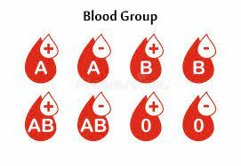

Donor will first need to fill up the blood donation registration form/card.

Have their body weighted.
Have a blood test to identify the blood group and haemoglobin level.
Undergoes pre-donation counselling by Medical Officer / Nurse.
If qualified, have their details registered and blood donation book issued.
This is followed by the blood donating process itself that would normally last between 7-15.
After the donation completed and needle removed, the donor needs to rest for at least 10 minutes before getting off the bed.
Donor will then be served with light refreshment.